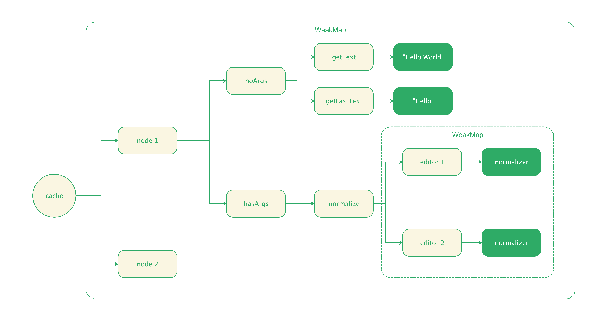
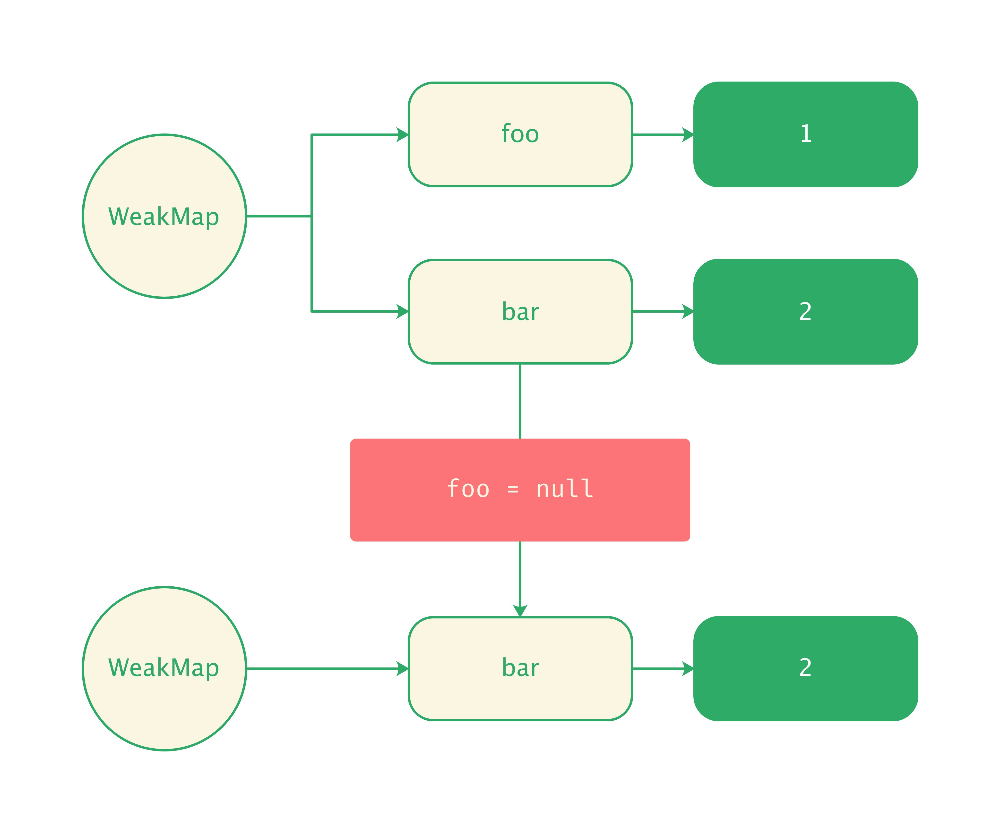

Memorize
在 Slate.js 中，存在一些高频调用的操作，例如，在 path 一节中提到的 node.getKeysToPathsTable()，它会构建当前节点及其所有子孙的 key-to-path table。
假设我们的文档很大时，每次查询节点路径都调用 node.getKeysToPathsTable() 重新构建 key-to-paths table，就会造成严重的性能问题。
为此，Slate.js 通过 memorize 技术为函数调用做了缓存，这是一种常规的性能优化手段：将函数的执行结果缓存，下一次以同样的「参数」和「上下文」调用函数时，直接返回缓存的结果。
memoize(NodeInterface.prototype, [
'getFirstText',
'getKeysToPathsTable',
'getLastText',
'getText',
'normalize',
'validate',
])
Slate.js 通过 WeakMap 创建了对象的函数缓存，每个对象的缓存包含了「有参数调用」和「无参数调用」函数两个 hash map。特别地，对于有参数调用，memoize 需要考虑为不同的参数集合设置不一样的缓存，并且，所有以对象为参数的缓存，都用 WeakMap 构建。

我们用一个简单地例子来理解 Slate.js memoize 的结构：
class Num {
constructor(num) {
this.num = num;
}
add(rhs, n) {
return this.num + rhs.num + n;
}
}
memoize(Num, ['add']);
const left = new Num(1);
const rhs1 = new Num(1);
const rhs2 = new Num(2);
left.add(rhs1, 1);
left.add(rhs1, 0);
left.add(rhs2, 0);
上面这个例子， momoize 最终为 left 对象生成的有参数缓存就会是：
{
hasArgs: {
add: {
STORE_KEY: WeakMap({
[rhs1]: {
1: 3,
0: 2
}
[rhs1]: {
0: 3
}
})
}
}
}
当下一次调用 left.add(rhs, 1) 后，我们就能沿着缓存路径，获得缓存的计算结果 3。
Why WeakMap?
在 JavaScript 应用程序开发中，我们惯常使用一个普通的 plain object 作为缓存，包括在 Slate.js 早期版本中，也是使用的 plain object 作为 memoize 缓存：
let foo = { name: 'foo' }
let bar = { name: 'bar' }
const cache = {
foo: foo,
bar: bar,
// ...
}
假设我们不再使用 foo 或者 bar 了，但由于缓存仍引用着它们，导致 GC（垃圾回收）认为对象仍在使用，无法回收引用的资源，从而造成内存泄漏:
foo = null
cache.foo // { name: 'null' }
而 WeakMap 持有的是对象的 Weak Reference（弱引用），弱应用不会保护被引用的对象逃过垃圾回收，因此，当对象不再被使用，垃圾回收就能自动清理 WeakMap 该对象映射的内存空间：
const weakMap = new WeakMap()
let foo = {}
weakMap.set(foo, 1)
foo = null
weakMap.has(foo); // false
